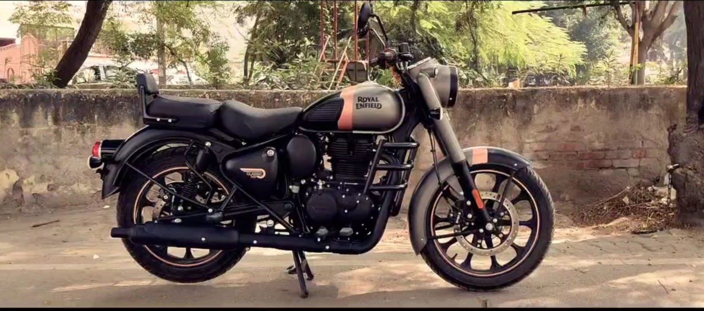
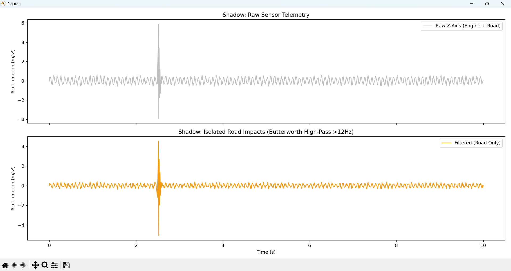

Turning a 350cc Royal Enfield into a mobile data-gathering station to predict road hazards before they cause accidents.
The heart of ShadowMap is an MPU6050 6-axis accelerometer mounted directly to the frame. I engineered a custom dampening mount to ensure the engine's 350cc vibrations don't drown out the road data.

My 350cc Royal Enfield "The Baron" equipped with the ShadowMap sensor array
Data streams via a Python bridge into a PostgreSQL database. The magic happens in the cleaning phase, where I apply a High-Pass Filter to isolate pothole impacts from road noise.

Accelerometer waveform showing distinct pothole impact signatures
Crowdsourced road safety, visualized in real-time